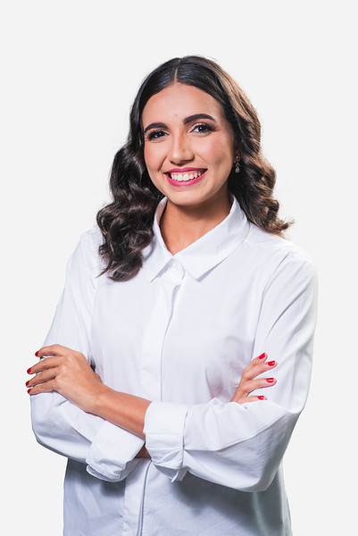

Transformando a complexidade da saúde em eficiência operacional.
+160
profissionais impactados
+10
clínicas atendidas

Prazer, Adriane França
Sou uma grande entusiasta de inovação em saúde, especialista em melhoria de processos e Engenheira Biomédica pela UFRN. Impactar positivamente o ambiente em que estou inserida é meu maior propósito e é assim que minha trajetória vem sendo guiada, atuando hoje como o elo entre tecnologia, processos e cuidado.
Com vivência prática no âmbito do SUS e em clínicas particulares, entendo que o maior desafio da saúde não está na falta de tecnologia ou de recursos, mas na forma como essas soluções são integradas à rotina dos serviços e a uma gestão verdadeiramente eficiente.
Como certificada Lean Six Sigma Green Belt, aplico uma metodologia para eliminar desperdícios e otimizar fluxos. Meu objetivo é garantir que você, profissional de saúde, tenha dados confiáveis e sistemas inteligentes para focar no que realmente importa: o paciente.
-
Inovação Premiada: Idealizou uma startup para
impulsionar a doação de leite materno, projeto selecionado pelo
programa Decola RN powered by Inovätiva.
- Base Científica: Integra o Grupo de Pesquisa em Gestão e Inovação em Saúde (GIS-UFRN/CNPq).
Soluções
Padronização de processos
Aplicação de frameworks de eficiência e desenvolvimento de protocolos operacionais padrão (POPs) que garantem a continuidade do cuidado, minimizam erros e asseguram que a assistência seja segura e centrada no paciente.
Transformação Digital & Omnichannel
Implementação e integração de sistemas e ferramentas interoperáveis que envolvem a jornada do paciente, garantindo a proteção de dados sensíveis (LGPD) e a disponibilidade da informação para decisões assertivas.
Business Intelligence (BI) & Indicadores
Estruturação de dashboards voltados para a gestão baseada em valor. Transformamos dados em indicadores de performance assistencial e operacional, permitindo o monitoramento e contribuindo para tomadas de decisão.
Automação com IA
Identificação de tarefas repetitivas e implementação de inteligência artificial para otimizar o tempo da equipe e escalar a produtividade.
Engenharia Clínica
Gestão técnica e estratégica do parque tecnológico, em conformidade com as normas vigentes, como RDC nº 509/2021 e garantindo a segurança do paciente e a vida útil dos equipamentos.
Capacitação
Treinamentos focados na cultura de processos e consultoria sob medida para desafios específicos do seu negócio.
Resultados em destaque
Resultados reais de quem já transformou sua operação com eficiência e tecnologia.
Jornada do Paciente Omnichannel
Integração de canais de atendimento e sistema de gestão, diminuindo o tempo de espera na recepção em 40% e zerando ruídos de comunicação.
Dashboard de Indicadores Hospitalares
Criação de painéis em tempo real para a diretoria, permitindo a gestão à vista e decisões baseadas em dados estruturados e confiáveis.
Gestão de Laudos em Clínica Especializada
Reestruturação do fluxo operacional que reduziu o tempo de entrega de 45 para 15 dias úteis (66%), mitigando 60% das falhas críticas identificadas e elevando a satisfação dos pacientes.
Redução de Absenteísmo
Implementação de estratégias de engajamento e controle que reduziram a taxa de faltas de 35% para 17%, otimizando a agenda assistencial e o acesso ao cuidado.
Vamos conversar sobre como otimizar os fluxos da sua operação?
Seja para uma implementação pontual ou um diagnóstico completo, estou pronta para ajudar sua clínica a ser mais eficiente e digital.